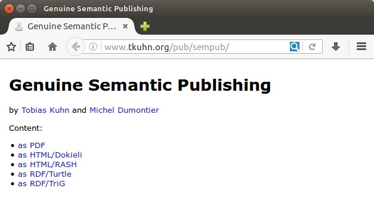

Genuine Semantic Publishing
Abstract
Various approaches and systems have been presented in the context of scholarly communication for what has been called semantic publishing. Closer inspection, however, reveals that these approaches are mostly not about publishing semantic representations, as the name seems to suggest. Rather, most approaches take the processes and outcomes of the current narrative-based publishing system for granted and only work with the already published papers. This includes semantic annotations, semantic interlinking, semantic integration, and semantic discovery, but with the semantics coming into play only after the publication of the original article. While these are interesting and important approaches, they fall short of providing a vision to transcend the current publishing paradigm. We argue for taking the term semantic publishing literally and work towards a vision of genuine semantic publishing, where computational tools and algorithms can help us with dealing with the wealth of human knowledge by letting researchers capture their research results with formal semantics from the start, as integral components of their publications. We argue that these semantic components should furthermore cover at least the main results, that they should originate from the authors themselves, and that they should be fine-grained and light-weight for optimized re-usability and minimized publication overhead. This paper is in fact not just advocating our concept, but is itself a genuine semantic publication, thereby demonstrating and illustrating our points.
Keywords
- semantic publishing
- scholarly communication
- Linked Data
Introduction
Many scholars have pointed out that the classical way of publishing scientific articles is ill-suited to deal with the rapid growth of both, volume and complexity, of scientific contributions [1,2]. To overcome these problems, next generation scientific publishing [3] has to respond to the increasing importance of datasets and software, and needs to provide methods to automatically organize reported scientific findings. Perhaps the most important shortcoming of the current publication system is that scientific papers do not come with formal semantics that could be processed, aggregated, and interpreted in an automated fashion.
Semantic publishing [4,5,6] is a general approach to tackle this problem of scholarly communication by using the concepts and tools of the Semantic Web and related fields. This idea was basically born together with the idea of the Semantic Web itself. In 2001, Tim Berners-Lee and James Hendler sketched how they expect researchers in the future to produce machine-readable descriptions of their experiments and findings, in the form of mark-up of their research papers or as independent representations made public on the web [7]. Unfortunately, subsequent work has deviated from this general proposal.
The topic of semantic publishing has received considerable attention during the last few years, most prominently in events that carry the term in their names, specifically the with workshop series on Semantic Publishing (SePublica) and the Semantic Publishing Challenges at ESWC conferences [8,9,10]. However, the presented approaches mostly interpret the term semantic publishing in a non-intuitive way. Instead of changing the publishing process, they mostly take existing classical publications as their starting point and simply apply semantic technologies on them, mostly without touching the publishing process or the object that is being published. This leads them to propose solutions that are quite conventional, and fall short of providing a vision for the long-term future. We argue here that we should aim for semantic publishing in the literal sense, which we call genuine semantic publishing to distinguish it from the existing term.
Semantic Publishing
Semantic publishing has been defined as "anything that enhances the meaning of a published journal article, facilitates its automated discovery, enables its linking to semantically related articles, provides access to data within the article in actionable form, or facilitates integration of data between papers" [5], and this definition accurately reflects how the term "semantic publishing" has been used in the recent literature. We argue here, however, that this definition is in one way too restrictive and in another way too inclusive if we want to be faithful to the literal and intuitive meaning of the term and if we aim to follow the spirit of the Semantic Web vision.
In our view, the definition above is too restrictive because semantic publications according to this definition are required to accompany a "journal article" or a "paper." An entity that only contains a semantic representation of a scientific result, without an accompanying narrative article, could not be considered a semantic publication. On the other hand the definition is too inclusive, in our view, because it covers very shallow approaches that add little — if anything — to established approaches of publishing. For example, letting authors choose keywords from standardized vocabularies for their paper — as many journals do — in fact "enables its linking to semantically related articles," and therefore by the definition above makes it a semantic publication. As another example, a semantic annotation performed by a third party on an article "enhances the meaning of a published journal article" and therefore would have to be called a semantic publication, even if the semantic annotation is not even made public. In general, the existing literature seems to interpret the term "semantic publishing" as "adding semantics to something that is published" instead of the more intuitive readings of "publishing something that is semantic" or "publishing in a semantic manner." (We are using the word semantic in its narrow technical sense of carrying a formal logic-based representation of the content's meaning.)
We argue here for a more intuitive definition of semantic publishing that is broader in the sense that no narrative article needs to be present, and that is at the same time narrower in the sense that the semantic representation has to be a first-class object created and published by the authors. We propose the definition that genuine semantic publishing occurs when somebody publishes a work that includes authentic and fine-grained representations of its content in a shared and interoperable semantic notation, where these semantic representations have essential coverage and are a primary component of the published entity. We explain in more detail below what we mean by authentic, fine-grained, essential coverage, and primary component}.
Figure 1 illustrates our point with a simple analogy. Classical papers are shown on the left hand side as boxes that are closed and hard to access for automated techniques. Existing approaches to what has been called semantic publishing merely adorn this box with formal semantics — represented by flowers in the picture — but leave it closed. This adornment is very useful, to be sure, but it does not reach to the main content of the box. By only looking at the formal semantics, one can possibly find out the topic of the paper but not its main message. Moreover, the adornment is often attached at a later point, after the box has been shipped so to say, and is therefore not a proper part of it. Speaking in terms of this metaphorical image, we argue that we should open the box and let semantics bloom right from the inside. We should represent the paper's main message with formal semantics. As we see on the right hand side of the figure, this metaphorically turns the box into a flowerpot. Now semantics is the main content, and the scientific paper has become a container for semantics instead of a closed box with a secondary usage as a pin board for semantic annotations.
In the existing literature, we often encounter the implicit assumption that the semantic representation of knowledge has to start from a textual representation, and therefore writing a statement down in natural language always needs to be the first step. For example, we can read in a paper on semantic publishing that "learning how the brain creates and decodes meaning from text is essential if we are to provide better tools for scientific inquiry" and that we need to "train computers to help us read scientific text" [6]. While these are certainly interesting problems, it is not obvious why they are essential if we take the approach of semantic publishing literally, i.e. if we ensure that the published artifacts come with semantic representations from the start. There is no law of nature that research findings can only be formalized after they have been expressed in a narrative text. It can very well be the other way round, such as a researcher writing a narrative text verbalizing existing formal statements she has come up with. More likely, these two will go hand in hand in an iterative process, much like manuscripts and their content typically being shaped through several rounds of revisions. It has in fact been argued — convincingly in our opinion — that this iterative process of scientific writing contributes in an important way to scientific understanding and discovery [11], and therefore it seems beneficial for the semantic representations to participate in these iterations from the start, and not to come into play only at the point where the text is already finalized. However, many articles in the area of semantic publishing seem to make this implicit text-first assumption, as exemplified by papers presented at semantic publishing workshops claiming that "annotations on all levels pave the way for shared knowledge understanding" [12] and that "semantic publishing [...] can be defined as the activity of enhancing a document" [13], among many others (e.g. [14,15,16]). The entire approach of semantic annotation is based on this text-first paradigm, which is a perfectly valid approach but is surely not the only possibility.
We get a similar picture if we look at the Semantic Publishing Challenge held at the Semantic Web conferences ESWC from 2014 until 2017 [8,9,10]. There were three tasks defined for each of these three challenges, but none of them actually deals with publishing. Instead they are about automatically extracting and interlinking semantic data from existing publications. Only the "in-use" task of the first challenge was general enough to not exclude publishing ("showcase the potential of Semantic Web technology for enhancing and assessing the quality of scientific production"), but it did not specifically mention the publishing process either. Unsurprisingly then, the approaches presented at these challenges deal with extraction from and annotation of articles that are already written and published (with the only exception being a paper introducing a publishing platform for Research Objects [17]).
To be clear, we do not mean to deny the value or importance of this body of existing work. To the contrary, these approaches are highly valuable to deal with the wealth of existing publications and those that will become available in the near future. Besides this important work, however, we also need clear and bold visions for the future on how we can improve the form in which such publications are created in the first place.
Genuine Semantic Publishing
As we have shown above, most approaches that go under the label semantic publishing are not actually about publishing, and the approaches that do target the publication of semantic representations cover different aspects thereof that only partly overlap. We therefore think that there is a need for clear criteria of genuine semantic publishing that include concerns about the authoritativeness and essential coverage of semantic representations, as well as their status in relation to narrative articles and their granularity level.
The first aspect we would like to discuss here is what we call essential coverage of semantic representations with respect to the entity to be published. A representation has essential coverage with respect to a work if it covers (at least) the essence of the work. The essence of a work is its main message, which for scientific articles normally consists of the main claims, findings, and arguments. A semantic representation may not cover all aspects discussed and described throughout a scientific work, but for it to have essential coverage it has to cover the main points: If you had to summarize a paper in one sentence, the content of this sentence has to be present in the semantic representation too. One can also see it as a kind of democratization process of making automated agents first-class citizens: English-speaking agents (e.g. human researchers) get the main content of the work in their English-based representation (i.e. the narrative text); so RDF-speaking agents (e.g. Linked Data aware software) should also get the main content of the work in their RDF-based representation. As we will see below, this perspective aligns very well with the well-established web technique of content negotiation.
Another important aspect is the authoritativeness of the source of the semantic representations, which determines their authenticity. Semantic representations can only be considered authentic if they originate from an agent that is authoritative in the given situation. In the case of the publication of a scientific result, the only authoritative source are the researchers (who are called authors in this context). Semantic representations of scientific results are only authentic if they are provided by the researchers themselves, and this relation can be made explicit with a precise provenance representation. It has long been known in the area of knowledge engineering that the process of formalizing expert knowledge is not merely a process of "transferring" or "converting" knowledge from existing representations inside the heads of experts to formal representations of a form that can be stored in a knowledge base. Rather it has to be seen as a creative modeling process [46,47] where formal structures are generated that existed only in an incomplete, implicit, and unconscious form in the experts' heads. Explaining a result in a narrative is simpler than formally modeling it, in the sense that natural language allows the writer to remain vague and even ambiguous. Accurately modeling knowledge only from such a narrative text with its inherent vagueness and ambiguity is therefore in general not just difficult but strictly impossible without a further connection to the authoritative source. Genuine semantic publishing requires the authors of scientific results to perform the modeling task themselves, because they are — by definition — the only authoritative source. We claim that — contrary to many existing approaches — we should not try to relieve the authors of this burden (though we should of course try to help them). Otherwise, the semantic representations cannot be considered authoritative and should therefore not be considered part of the publication's content (unless the person who produces the formal representations becomes a co-author). As Tim Berners-Lee and James Hendler made clear when the Semantic Web was just about to come into existence as a research field, it "involves asking people to make some extra effort" [7]. In the case of scientific publishing, it involves asking authors to make the extra effort of providing formal semantic representations of their findings.
To make the semantic representations first-class citizens, they furthermore need to have an existence in their own right. We cannot call something a genuine semantic publication if the semantic representations are attached to an already published article at a later point, or if they can only be interpreted in the context of the narrative article. Neither should these semantic representations be considered just another type of supplementary material, listed somewhere at the very end of the article as a noncommittal extra file. In fact, one of the defining properties and one of the big advantages of declarative and monotonic semantic notations like RDF is that statements are in an important sense self-explanatory and independent. Such a formal statement can be taken out of its context and stripped from natural language explanations attached to it, and it still means exactly the same thing, as far as the formal semantics are concerned.
In turn, this self-explanatory and independent nature allows for publications of semantic representation to be very light-weight and fine-grained. More so than narrative texts, formal representations with declarative and monotonic semantics can be easily broken down into independent pieces, and therefore we should allow people to exploit this nice property. Such light-weight semantic publications might consists of just a single statement (like "X is related to Y"), and for larger chunks of semantic representations we should make it possible to refer to such individual statements in a fine-grained way (e.g. refer explicitly to the statement "A causes B" within a larger set of statements).
Based on these arguments, we define that genuine semantic publishing needs to comply with the following criteria:
- A scientific work needs to come with formal representations that are semantic, in the sense that they are not just machine processable but machine interpretable, and that are linked so they add to the existing formal body of knowledge.
- These semantic representations might be underspecified but need to have essential coverage in the sense that they cover (at least) the core of the main claims of the given work.
- They need to be authentic in the sense that the respective authoritative persons create or approve the semantic representations. Domain data can only come from the researchers, and metadata has to come from the people responsible for the form of the published work, i.e. the researchers and/or the editors.
- The semantic representations need to be a primary component of the published work, made available together with everything else at the time of publication. They must furthermore have an independent existence in their own right and not merely be appended or attached to the main entity as noncommittal extra data.
- The semantic representations and their containers need to be fine-grained and light-weight. Even though such semantic representations might often be published in larger collections, the publication of minimal additions and corrections needs to be possible without a large overhead.
Most, maybe all, existing approaches on what has been called semantic publishing comply with the first criterion, but only a few of them propose or support representations that comply with the others. We illustrate below that these criteria are in fact not difficult to achieve with existing technologies.
Here, we should briefly discuss an aspect that we deliberately left out of our criteria. Several of the related approaches introduced above (in particular executable papers and scholarly HTML) have a specific focus on how semantic representations can enhance the user experience in the form of interactivity. While we think such interactivity can be highly valuable, we argue for a clear distinction between publication and use, where interactivity belongs to the latter. It is precisely the benefit of formal semantic representations that they facilitate all kinds of subsequent (interactive) use but are agnostic about the precise circumstances and technology. Genuine semantic publications may therefore come with specific interactive features, but it is not appropriate to make that a strict requirement.
Furthermore, it is probably helpful to briefly discuss and illustrate what types of claims a scientific work can make. A large part of the body of scientific work deals with what has been called "normal" or "puzzle-solving" science [48]. In this type of science, known kinds of relations and properties are discovered for objects of known kinds, such as a statement that a given mutation of a given gene can be the cause for a given disease. Such types of statements are relatively straightforward to formalize, for example by connecting a concept identifier for the given gene mutation with the concept identifier for the given disease by the use of a relation denoting the causal relationship, possibly augmented with the needed qualifications and contexts (such as the species to which it applies). In a next step, such a statement as a whole can be formally linked to its authors and to the study from which they derived it (such as a clinical trial and its properties). If the authors represent these formula in a specific language like RDF (assuming existing established vocabularies cover all needed terms), save them in a file, and share and archive them on the web, then we have perfect case of a genuine semantic publication. The authors may want to add a narrative to it, but they do not need to, as the semantic representation speaks for itself. More disruptive and more abstract kinds of scientific contributions involve the criticism of existing concepts or arguments, and the advocation of new ones. In the most extreme case, this can consist of proposing a paradigm shift that can lead to a scientific revolution [48]. By their nature, these types of contributions are harder to formalize, but it is always possible to at least make the action of criticizing or advocating explicit and to position the objects in the space of related concepts, arguments, or paradigms.
Finally, before we move on to demonstrate in detail how advocating a new concept can be achieved with a genuine semantic publication, let us reflect for a moment on the potential impact of such a proposal. The machine-interpretability of publications' main claims entails that software could automatically connect, aggregate, and reason about the body of published scientific work. For example, we could automatically answer complex questions or produce interactive science maps, not only at the meta-level of papers, authors and their relations, but also on the domain level of tangible and abstract concepts and objects of study. This will allow scientists (and others) to acquire a more accurate and more complete picture of the current state of science with much less effort, which in turn can accelerate scientific work and improve its quality. The support for small fine-grained publications can further speed up scientific discovery, as researchers no longer need to wait for a larger body of work to assemble, but can publish smaller findings as they come in. Results from such software solutions will never be error-free, but due to our authenticity requirement we can find out which authors are to blame for mistakes we find in the semantic representations, instead of some anonymous software component or human annotator. This in turn can put strong incentives on authors to provide good formal representations for their works. It is hard to foresee how all the involved technical — let alone social and institutional — aspects would unfold, but it is not hard to imagine that such technology could have a profound positive impact on the communication of science.
Genuine Semantic Publishing in Action
It turns out that all the technologies needed for applying genuine semantic publishing are already available and most of them are very mature and reliable. There are no technical obstacles preventing us from releasing our results from today on as genuine semantic publications, even though more work is needed on ontologies that cover all relevant aspects and areas and on nice and intuitive end-user interfaces to make this process as easy as possible.
The paper that you are reading is in fact a genuine semantic publication. It has different representations for different types of usage. You might be reading these lines while sitting on a beach and reading from a sheet of paper printed from the article's PDF version, or you might be reading it in your office from a web page in HTML format within your browser window. In either case, these representations contain the narrative text, which we carefully wrote to explain and motivate our ideas to human readers. But we also make our work available to software agents (i.e. any kind of software programs), for which we have different representations that consist of formal RDF statements instead of narrative text. Importantly, these RDF statements convey the same main message as the narrative text: They are different representations of the same work.
To formally represent the main content of the paper, we can make use of existing ontologies and vocabularies, such as CiTO [37] and SKOS [49]. Specifically, our paper's main message is the advocacy of the new concept of genuine semantic publishing, which can be expressed as follows in the Turtle RDF notation [50]:
p:paper cito:describes p:GenuineSemanticPublishing ;
cito:supports p:GenuineSemanticPublishing .
There is to our knowledge no existing ontology that would exactly capture the relation of a publication advocating a given concept, but the combination of the two relations describes and supports from the CiTO ontology comes close.
We as authors should of course say a bit more about this new concept, most importantly that it is related to the existing concept of semantic publishing:
p:GenuineSemanticPublishing skos:related dbpedia:Semantic_publishing .
And we can express our critical position on that concept:
p:paper cito:critiques dbpedia:Semantic_publishing .
Next we can formally represent the five criteria based on which we define our new concept:
p:GenuineSemanticPublishing skos:definition
p:GenuineSemanticPublishingCriteria .
p:GenuineSemanticPublishingCriteria dct:hasPart
p:GenuineSemanticPublishingCriterion1 .
p:GenuineSemanticPublishingCriterion1
dct:title "First criterion of genuine semantic publishing: machine
interpretability" ,
dct:description "A scientific work needs to come with formal representations
that are semantic, in the sense that ..." .
p:GenuineSemanticPublishingCriteria dct:hasPart
p:GenuineSemanticPublishingCriterion2 .
...
We can try to capture part of the content of these criteria in RDF as well, but at some point we have to stop and be content with an informal description in natural language (at the latest when we hit the symbol grounding problem). However, we believe that it is always possible to build a formal representation of the main content at the highest level, such as introducing and advocating a new concept, even though we will mostly not be able to provide a complete formal definition. In this sense, such a representation is underspecified but has essential coverage.
We would like to note here that — while we are confident in declaring that our own representation complies with our criteria — we do not intend to claim that it achieves them to the highest degree possible. It is, to the contrary, still a quite crude representation that leaves many details and aspects of our main claims and arguments untouched. For example, we state that our paper critiques the concept of semantic publishing, but we do not say why and in what way, namely that we claim its interpretation to be not intuitive and not visionary. We are not aware of any ontology that would allow us to express this, and we restricted ourselves for this demonstration to existing resources. More work will be needed on establishing such ontologies and best practices to facilitate more precise and more inclusive formal models of scientific findings and arguments, but the currently existing vocabularies already allow — at least in our case — to achieve a basic level of genuine semantic publishing.
In any case, the benefits of such a representation of the main message of a paper might not seem obvious at this point. One of the main advantages comes when subsequent work starts referring to these formal representations. As a fictitious example, a subsequent paper might propose the concept of "advanced semantic publishing" that includes our criteria 1 to 4, but criticizes number 5 and suggests to replace it with a different one:
p2:anotherPaper cito:describes p2:AdvancedSemanticPublishing ;
cito:supports p2:AdvancedSemanticPublishing .
p2:AdvancedSemanticPublishing skos:related p:GenuineSemanticPublishing .
p2:anotherPaper cito:critiques p:GenuineSemanticPublishingCriterion5 .
p2:AdvancedSemanticPublishing skos:definition
p:AdvancedSemanticPublishingCriteria .
p2:AdvancedSemanticPublishingCriteria dct:hasPart
p:GenuineSemanticPublishingCriterion1 ,
p:GenuineSemanticPublishingCriterion2 ,
p:GenuineSemanticPublishingCriterion3 ,
p:GenuineSemanticPublishingCriterion4 ,
p2:AdvancedSemanticPublishingCriterion .
p2:AdvancedSemanticPublishingCriterion
dct:title "Criterion for advanced semantic publishing" ,
dct:description "..." .
This example shows how we can formally capture the high-level relation of papers' content, and thereby place them in the wider context of the literature on the respective topic.
The above RDF representations are interpretable by machines, and thereby automated software agents of all sorts can read and process them. Human readers, of course, normally prefer a natural text representation of a paper's content. To account for such different demands, resources on the web can in general have different equivalent representations for different types of agents. Content negotiation can then be used in the background to find a suitable representation based on the agent's request (mediated by the browser) and the available representation formats on the server side. Alternatively, we can use special kinds of hyperlinks on a landing page to achieve the same effect within HTML. We will use this landing page approach here for demonstration purposes because it makes the different representations more explicit, but the presence of a landing page is not required.
Such a landing page links to the different (classical and semantic) representations of the work. With just a few lines of HTML code, we can define a canonical URL and some minimal metadata, such as title and authors of the work (more metadata is available in the actual representations):
<!DOCTYPE html> <html> <head> <link rel="canonical" href="http://www.tkuhn.org/pub/sempub/"> <title>Genuine Semantic Publishing</title> </head> <body> <h1>Genuine Semantic Publishing</h1> <p>by <a href="http://orcid.org/0000-0002-1267-0234" rel="author">Tobias Kuhn</a> and <a href="http://orcid.org/0000-0003-4727-9435" rel="author">Michel Dumontier</a> </p>
And then we can link to different representations of the content of the given work:
<p>Content:</p> <ul> <li><a rel="alternate" href="sempub.pdf" type="application/pdf">as PDF</a></li> <li><a rel="alternate" href="sempub.dokieli.html" type="text/html">as HTML/Dokieli</a></li> <li><a rel="alternate" href="sempub.rash.html" type="text/html">as HTML/RASH</a></li> <li><a rel="alternate" href="sempub.ttl" type="text/turtle">as RDF/Turtle</a></li> <li><a rel="alternate" href="sempub.trig" type="application/trig">as RDF/TriG</a></li> </ul> </body> </html>

Specifically, we link to the PDF version of this work, two flavors of HTML (Dokieli and RASH), and RDF representations in Turtle (without provenance information and metadata) and TriG (with provenance information and metadata in the form of nanopublications), thereby also showcasing how existing technologies can contribute to achieve genuine semantic publishing.
Figure 2 shows what such a minimal landing page looks like in a browser, and the respective data can be found online (dataset and website) and in the supplemental material. Importantly, these list items point to different representations of the same work, each covering the work's main points and thereby satisfying the second requirement of genuine semantic publishing with respect to essential coverage. The RDF representations are machine interpretable, which addresses our first criterion, and the fact that they appear on the same level as the narrative papers shows that they are a primary component of the published work, satisfying the fourth criterion. The fact that we as authors created and approved all these representations moreover covers the third criterion of authenticity.
To illustrate the last criterion of being fine-grained and light-weight, let us assume that somebody wanted to add at a later point just a single triple to assert the connection between our first criterion and the concept of Linked Data:
p:GenuineSemanticPublishingCriterion1 skos:related dbpedia:Linked_data .
We can save this triple in a file and create a bare minimum landing page that could look as follows:
<!DOCTYPE html> <html> <head><title>Genuine Semantic Publishing and Linked Data</title></head> <body> <p> by <a rel="author" href="http://orcid.org/0000-0002-1267-0234">Tobias Kuhn</a> </p> <p>Content:</p> <ul> <li><a rel="alternate" href="sempubld.ttl" type="text/turtle">as RDF</a></li> </ul> </body> </html>
Together, these two files, containing fewer than 500 bytes, form a complete publication according to our criteria. This demonstrates that fine-grained contributions down to single triples can be published in a very light-weight manner with an overhead of just a few hundred bytes.
Conclusions
The downsides and limitations of the current scientific publishing paradigm have become apparent in many ways, from the researchers unable to deal with the avalanche of new papers published in their fields to the struggles of elevating scientific datasets to the level of appreciation they deserve. We argue that we need both, grand visions and small practical steps, to move forward and advance science communication, to make sure that the benefits of future breakthroughs are not offset by our inefficiency in communicating them.
We have to make sure, however, that we do not confuse our grand vision with the small practical steps towards it. Semantic publishing was once a grand vision but the term was then hijacked by approaches implementing small practical steps. These small steps are certainly important, but they also made us lose sight of the longer-term vision.
In this position paper, we aimed to focus again on the grand vision, which we propose to call genuine semantic publishing. We argued that genuine semantic publications should not only come with representations that are machine interpretable, but that these representations also need to have essential coverage of the work's main claims, that they need to be authentic and approved by the authors, that they should form a primary component of the work, and that they should allow for fine-grained and light-weight contributions.
By explaining how this very paper was written as a genuine semantic publication, we demonstrated that — as far as technology is concerned — the vision is not that grand after all. Technically, genuine semantic publications are at a basic level already feasible nowadays with established and mature technologies. But many grand challenges remain, including the development and deployment of stable overarching formal models that include aspects such as evidence and arguments, reliable domain ontologies for the various still under-resourced fields, intuitive user interfaces, data publishing infrastructures, methods for attribution and recognition of scientific efforts, and effective incentive structures. All these challenges can only be addressed, however, with a clear vision of how scientific publishing should develop in the future.
Acknowledgments
We would like to thank Silvio Peroni and Tim Clark for discussions on the topic, and the reviewers and Herbert van de Sompel for their very valuable suggestions to improve the article. Figure 1 was designed by Germán Barboza, from Cordero Producciones.
References
- S. Bechhofer, I. Buchan, D. De Roure, P. Missier, J. Ainsworth, J. Bhagat, P. Couch, D. Cruickshank, M. Delderfield, I. Dunlop et al., "Why linked data is not enough for scientists," Future Generation Computer Systems, vol. 29, no. 2, pp. 599-611, 2013.
- J. Priem, "Scholarship: Beyond the paper," Nature, vol. 495, no. 7442, pp. 437-440, 2013.
- T. Clark, "Next generation scientific publishing and the web of data," Semantic Web, vol. 5, no. 4, pp. 257-259, 2014.
- D. Shotton, K. Portwin, G. Klyne, and A. Miles, "Adventures in semantic publishing: exemplar semantic enhancements of a research article," PLoS computational biology, vol. 5, no. 4, p. e1000361, 2009.
- D. Shotton, "Semantic publishing: the coming revolution in scientific journal publishing," Learned Publishing, vol. 22, no. 2, pp. 85-94, 2009.
- A. de Waard, "From proteins to fairytales: directions in semantic publishing," Intelligent Systems, IEEE, vol. 25, no. 2, pp. 83-88, 2010.
- T. Berners-Lee and J. Hendler, "Publishing on the semantic web," Nature, vol. 410, no. 6832, pp. 1023-1024, 2001.
- C. Lange and A. Di Iorio, "Semantic publishing challenge-assessing the quality of scientific output," in Semantic Web Evaluation Challenge. Springer, 2014, pp. 61-76.
- A. Di Iorio, C. Lange, A. Dimou, and S. Vahdati, "Semantic publishing challenge-assessing the quality of scientific output by information extraction and interlinking," in Semantic Web Evaluation Challenge. Springer, 2015, pp. 65-80.
- S. Vahdati, A. Dimou, C. Lange, and A. Di Ioro, "Semantic publishing challenge: bootstrapping a value chain for scientific data," 2016.
- F. L. Holmes, "Scientific writing and scientific discovery," Isis, vol. 78, no. 2, pp. 220–235, 1987.
- P. Smrz and J. Dytrych, "Towards new scholarly communication: A case study of the 4A framework," in First Workshop on Semantic Publication (SePublica 2011). CEUR-WS, 2011.
- A. Ruiz-Iniesta and O. Corcho, "A review of ontologies for describing scholarly and scientific documents," in 4th Workshop on Semantic Publishing (SePublica 2014). CEUR-WS, 2014.
- A. C. S. Croset, S. Kafkas, M. Liakata, and A. Oellrich, "Exploring the generation and integration of publishable scientific facts using the concept of nano-publications," in First Workshop on Semantic Publication (SePublica 2011). CEUR-WS, 2011.
- C. H. Marcondes, "A semantic model for scholarly electronic publishing," in First Workshop on Semantic Publication (SePublica 2011). CEUR-WS, 2011.
- A. Di Iorio, S. Peroni, F. Vitali, and J. Zingoni, "Semantic lenses to bring digital and semantic publishing together," in Proceedings of the 4th International Workshop on Linked Science (LISC 2014). CEUR-WS, 2014.
- R. Palma, P. Ho lubowicz, O. Corcho, J. M. Gómez-Pérez, and C. Mazurek, "ROHub - a digital library of research objects supporting scientists towards reproducible science," in Semantic Web Evaluation Challenge. Springer, 2014, pp. 77-82.
- S. Bechhofer, D. De Roure, M. Gamble, C. Goble, and I. Buchan, "Research objects: Towards exchange and reuse of digital knowledge," The Future of the Web for Collaborative Science, 2010.
- A. González-Beltrán, P. Li, J. Zhao, M. S. Avila-Garcia, M. Roos, M. Thompson, E. van der Horst, R. Kaliyaperumal, R. Luo, T.-L. Lee et al., "From peer-reviewed to peer-reproduced in scholarly publishing: the complementary roles of data models and workflows in bioinformatics," PLOS one, vol. 10, no. 7, p. e0127612, 2015.
- P. Nowakowski, E. Ciepiela, D. Hareżlak, J. Kocot, M. Kasztelnik, T. Bartyński, J. Meizner, G. Dyk, and M. Malawski, "The collage authoring environment," Procedia Computer Science, vol. 4, pp. 608-617, 2011.
- P. Van Gorp and S. Mazanek, "Share: a web portal for creating and sharing executable research papers," Procedia Computer Science, vol. 4, pp. 589-597, 2011.
- M. Kohlhase, J. Corneli, C. David, D. Ginev, C. Jucovschi, A. Kohlhase, C. Lange, B. Matican, S. Mirea, and V. Zholudev, "The planetary system: Web 3.0 & active documents for STEM," Procedia Computer Science, vol. 4, pp. 598-607, 2011.
- T. K. Attwood, D. B. Kell, P. McDermott, J. Marsh, S. Pettifer, and D. Thorne, "Utopia documents: linking scholarly literature with research data," Bioinformatics, vol. 26, no. 18, pp. i568–i574, 2010.
- S. Capadisli, R. Riedl, and S. Auer, "Enabling accessible knowledge," CeDEM15: Conference for E-Democracy and Open Government, p. 257, 2015.
- A. Di Iorio, A. G. Nuzzolese, F. Osborne, S. Peroni, F. Poggi, M. Smith, F. Vitali, and J. Zhao, "The RASH framework: enabling HTML + RDF submissions in scholarly venues," in Proceedings of the ISWC 2015 Posters & Demonstrations Track, 2015.
- S. Capadisli, A. Guy, R. Verborgh, C. Lange, S. Auer, and T. Berners-Lee, "Decentralised authoring, annotations and notifications for a read-write web with dokieli," in International Conference on Web Engineering. Springer, 2017.
- M. R. Seringhaus and M. B. Gerstein, "Publishing perishing? towards tomorrow's information architecture," BMC bioinformatics, vol. 8, no. 1, p. 17, 2007.
- A. Ceol, A. Chatr-Aryamontri, L. Licata, and G. Cesareni, "Linking entries in protein interaction database to structured text: the FEBS letters experiment," FEBS letters, vol. 582, no. 8, pp. 1171-1177, 2008.
- T. Kuhn, L. Royer, N. E. Fuchs, and M. Schroeder, "Improving text mining with controlled natural language: A case study for protein interations," in 3rd International Workshop on Data Integration in the Life Sciences 2006 (DILS'06). Springer, 2006.
- T. Clark, P. Ciccarese, and C. Goble, "Micropublications: a semantic model for claims, evidence, arguments and annotations in biomedical communications," Journal of Biomedical Semantics, vol. 5, no. 1, p. 28, 2014.
- B. Mons, H. van Haagen, C. Chichester, J. T. den Dunnen, G. van Ommen, E. van Mulligen, B. Singh, R. Hooft, M. Roos, J. Hammond et al., "The value of data," Nature genetics, vol. 43, no. 4, pp. 281-283, 2011.
- P. Groth, A. Gibson, and J. Velterop, "The anatomy of a nano-publication," Information Services and Use, vol. 30, no. 1, pp. 51-56, 2010.
- C. Chichester, P. Gaudet, O. Karch, P. Groth, L. Lane, A. Bairoch, B. Mons, and A. Loizou, "Querying neXtProt nanopublications and their value for insights on sequence variants and tissue expression," Web Semantics: Science, Services and Agents on the World Wide Web, 2014.
- J. M. Banda, T. Kuhn, N. H. Shah, and M. Dumontier, "Provenance-centered dataset of drug-drug interactions," in Proceedings of the 14th International Semantic Web Conference (ISWC 2015). Springer, 2015, pp. 293-300.
- N. Queralt-Rosinach, T. Kuhn, C. Chichester, M. Dumontier, F. Sanz, L. I. Furlong et al., "Publishing DisGeNET as nanopublications," Semantic Web-Interoperability, Usability, Applicability, 2016.
- A. E. Bandrowski and M. E. Martone, "RRIDs: A simple step toward improving repro- ducibility through rigor and transparency of experimental methods," Neuron, vol. 90, no. 3, pp. 434–436, 2016.
- S. Peroni and D. Shotton, "FaBiO and CiTO: ontologies for describing bibliographic resources and citations," Web Semantics: Science, Services and Agents on the World Wide Web, vol. 17, pp. 33-43, 2012.
- S. Peroni, D. Shotton, and F. Vitali, "Scholarly publishing and Linked Data: describing roles, statuses, temporal and contextual extents," in Proceedings of the 8th International Conference on Semantic Systems. ACM, 2012, pp. 9-16.
- P. Ciccarese, M. Ocana, L. J. G. Castro, S. Das, and T. Clark, "An open annotation ontology for science on web 3.0," Journal of biomedical semantics, vol. 2, no. 2, p. 1, 2011.
- T. Lebo, S. Sahoo, D. McGuinness, K. Belhajjame, J. Cheney, D. Corsar, D. Garijo, S. Soiland-Reyes, S. Zednik, and J. Zhao, "PROV-O: The PROV ontology," W3C Recommendation, 2013.
- M. Dumontier, C. J. Baker, J. Baran, A. Callahan, L. Chepelev, J. Cruz-Toledo, N. R. Del Rio, G. Duck, L. I. Furlong, N. Keath et al., "The semanticscience integrated ontology (SIO) for biomedical research and knowledge discovery," Journal of biomedical semantics, vol. 5, no. 1, p. 14, 2014.
- J. Schneider, T. Groza, and A. Passant, "A review of argumentation for the social semantic web," Semantic Web, vol. 4, no. 2, pp. 159-218, 2013.
- A. De Waard and J. Schneider, "Formalising uncertainty: An ontology of reasoning, certainty and attribution (ORCA)," Semantic Technologies Applied to Biomedical Informatics and Individualized Medicine, 2012.
- L. N. Soldatova and R. D. King, "An ontology of scientific experiments," Journal of the Royal Society Interface, vol. 3, no. 11, pp. 795–803, 2006.
- M. H. Brush, K. Shefchek, and M. Haendel, "SEPIO: A semantic model for the integration and analysis of scientific evidence," in ICBO/BioCreative. CEUR-WS, 2016.
- W. J. Clancey, "The knowledge level reinterpreted: Modeling how systems interact," Machine Learning, vol. 4, no. 3-4, pp. 285-291, 1989.
- R. Studer, V. R. Benjamins, and D. Fensel, "Knowledge engineering: Principles and methods," Data and Knowledge Engineering, vol. 25, no. 1-2, pp. 161-197, March 1998.
- T. S. Kuhn, The Structure of Scientific Revolutions. University of Chicago Press, 1962.
- A. Miles and S. Bechhofer, "SKOS simple knowledge organization system reference," W3C recommendation, vol. 18, p. W3C, 2009.
- D. Beckett and T. Berners-Lee, "Turtle - terse RDF triple language," W3C Recommendation, 2011.